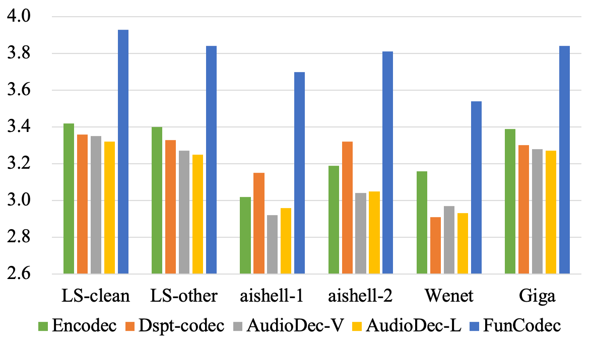
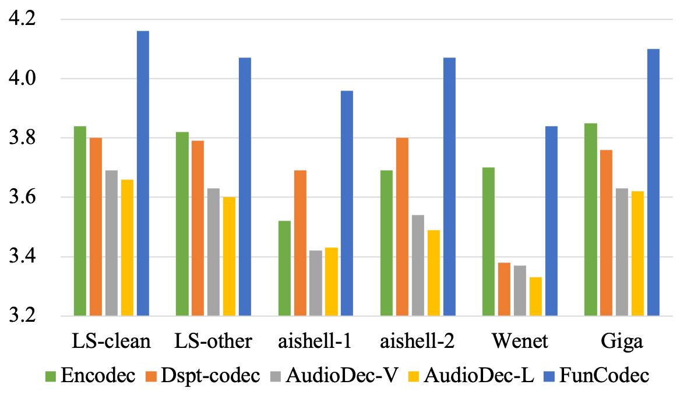

| Original speech | Encodec | Despt-Codec | AudioDec | FunCodec |
|---|---|---|---|---|
| Original speech | Encodec | Despt-Codec | AudioDec | FunCodec |
|---|---|---|---|---|
| Prompt text | Text | Prompt Speech + Synthesis Speech |
|---|---|---|
| later in accordance with what i believe to be the modern practice |
i always accept the gift, after deprecating the honour with words and gestures, and a little later, in accordance with what i believe to be the modern practice, return the compliment. |
|
| chris he asked | "why don't they look like us, chris? " he asked. | |
| 农地征补标准 | 最终也还是由政府来确定农地征补标准 | |
| 同比增长三 | 同比增长三十点二百分之二 |
The FunCodec codebase is available to download under a MIT license.
Our codebase available at
FunCode on github
1. Comparison of academic models in terms of ViSQOL scores on LibriTTS dataset. † means the model is causal.
| Models | Stride | 400 tk/s | 200 tk/s | 100 tk/s | 50 tk/s |
|---|---|---|---|---|---|
| SoundStream † | 320 | 4.23 | 4.00 | 3.60 | 3.12 |
| SoundStream | 320 | 4.28 | 4.06 | 3.76 | 3.31 |
| Encodec | 320 | 4.24 | 4.05 | 3.73 | 3.30 |
| FunCodec | 320 | 4.29 | 4.12 | 3.86 | 3.43 |
| FunCodec-2x | 640 | 4.29 | 4.16 | 3.94 | 3.64 |
| FunCodec-4x | 1280 | 4.31 | 3.94 | 3.43 | 2.91 |
2. Comparison between FunCodec and other toolkits under (a) lower and (b) higher token rate.
LS denotes Librispeech test sets.
While Librispeech and gigaspeech are English corpora, aishell and Wenet are Mandarin corpora.


3. Comparison of FreqCodec and other time domain models in terms of ViSQOL score on LibriTTS. Mag denotes magnitude spectrogram. C_in represents the channel number of inputs.
| MID | Domain | Param. | Flops | Groups(Enc,Dec) | 400 tk/s | 100 tk/s |
|---|---|---|---|---|---|---|
| M1 | Time | 14.85M | 3.72G | 1,1 | 4.29 | 3.86 |
| M2 | Mag,Angle | 16.21M | 6.39G | 1,1 | 4.32 | 3.84 |
| M3 | Mag,Phase | 16.21M | 6.47G | 1,1 | 4.36 | 3.85 |
| M4 | Mag,Phase | 4.38M | 1.73G | 1,C_in | 4.28 | 3.79 |
| M5 | Mag,Phase | 4.50M | 1.73G | 1,C_in/8 | 4.31 | 3.81 |
| M6 | Mag,Phase | 0.52M | 0.34G | C_in,C_in | 4.21 | 3.65 |
| M7 | Mag,Phase | 0.83M | 1.03G | C_in/4,C_in/4 | 4.25 | 3.80 |
Please cite the following if you make use of the toolkit.
@misc{du2023funcodec,
title={FunCodec: A Fundamental, Reproducible and Integrable Open-source Toolkit for Neural Speech Codec},
author={Zhihao Du, Shiliang Zhang, Kai Hu, Siqi Zheng},
year={2023},
eprint={2309.07405},
archivePrefix={arXiv},
primaryClass={cs.Sound}
}